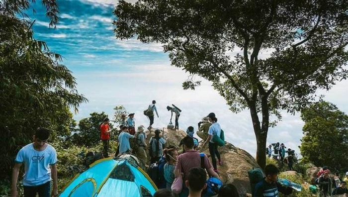

Du lịch núi Bà Đen Tây Ninh - Khám phá vùng đất sơn linh hùng vĩ
1. Núi Bà Đen Tây Ninh ở đâu?
Núi Bà Đen là một cảnh đẹp Tây Ninh nổi tiếng nằm ở phía Đông Bắc thành phố Tây Ninh, thuộc quần thể di tích văn hóa lịch sử núi Bà Đen, cách thành phố Hồ Chí Minh tầm 100km.
Bà Đen có độ cao 986m, là ngọn núi cao nhất Nam Bộ. Ngoài chiều cao ấn tượng, nơi đây còn có khung cảnh hữu thiên nhiên hữu tình, núi non hùng vĩ. Hiện tại, đã có tuyến cáp treo đưa du khách lên tận đỉnh núi để ngắm cảnh, chiêm bái các điểm du lịch, di tích tâm lịch.
Tuy nhiên, nhiều bạn trẻ vẫn thích tự mình trải nghiệm, chinh phục nóc nhà Nam Bộ bằng đường bộ.

Độ cao núi Bà Đen Tây Ninh là 986m so với mặt nước biển (Nguồn ảnh: Hainam travel)
2. Thời gian lý tưởng đi du lịch núi Bà Đen Tây Ninh
Thông thường, bạn sẽ phải mất nửa ngày cho quãng đường chinh phục đỉnh núi. Do đó, yếu tố thời tiết đóng vai trò hết sức quan trọng.
Mùa khô là thời điểm lý tưởng để chinh phục núi Bà Đen (Nguồn ảnh: truyenhinhvov)
Mùa khô ở Tây Ninh bắt đầu từ tháng 12 đến tháng 4 năm sau. Đây là thời điểm lý tưởng nhất để du lịch núi Bà Đen Tây Ninh. Đặc biệt vào mùa lễ hội chùa Bà Đen từ mùng 4 đến 16 tháng Giêng, lượng du khách hành hương tới đây là rất lớn.
Vào mùa mưa từ tháng 5 đến tháng 11, bạn cũng có thể tham quan, du lịch. Tuy nhiên, bạn nên xem dự báo thời tiết trước hành trình di chuyển để lựa chọn được ngày khô ráo.
3. Hướng dẫn đường đi núi Bà Đen Tây Ninh
3.1. Đường đi núi Bà Đen từ thành phố Hồ Chí Minh
Nếu xuất phát từ thành phố Hồ Chí Minh, bạn có thể lựa chọn du lịch núi Bà Đen Tây Ninh bằng xe riêng hoặc xe máy với 2 cung đường di chuyển:
Từ quốc lộ 22A đi đến ngã ba Trảng Bàng, sau đó rẽ phải vào tỉnh lộ 782. Tiếp tục đi khoảng 62km là đến núi Bà Đen. Với cung đường này, bạn sẽ di chuyển trong khoảng 3 tiếng đồng hồ. Trên đường đi sẽ có những quán nước dừng chân. Bạn đừng quên nghỉ ngơi, dưỡng sức để tiếp tục hành trình leo núi nhé!
Từ quốc lộ 22A đến ngã ba Trảng Bàng, sau đó rẽ trái đi vào đường thị trấn Gò Dầu. Tiếp tục đi tiếp lên quốc lộ 22B khoảng 72km nữa là đã đến núi Bà Đen. Cung đường này dài hơn nhưng ngược lại khung cảnh thiên nhiên rất đẹp. Nếu bạn yêu thích thiên nhiên, muốn có những tấm ảnh check-in cực đẹp thì nên đi theo hướng này.
Khám phá cung đường tuyệt đẹp bằng xe máy từ thành phố Hồ Chí Minh lên núi Bà Đen (Nguồn ảnh: yong.vn)
Ngoài ra, nếu muốn di chuyển an toàn, không tốn sức, bạn có thể di chuyển bằng xe bus từ trạm Bến Thành đến Gò Dầu. Sau đó, tiếp tục bắt xe từ Gò Dầu lên Long Hòa, Tây Ninh.
3.2. Đường đi từ bến xe Tây Ninh đến núi Bà Đen
Nếu từ bến xe Tây Ninh, bạn cũng có thể di chuyển bằng xe máy hoặc xe bus nhanh chóng.
Nếu di chuyển bằng xe máy, bạn chỉ cần chạy theo quốc lộ 22 đến Tây Ninh. Sau đó, hỏi thăm người dân là đã có thể tìm đường đến núi Bà Đen.
Nếu di chuyển bằng xe bus, bạn sẽ bắt xe từ bến xe Tây Ninh chạy thẳng đến cổng sau của núi Bà Đen. Đây là phương thức di chuyển an toàn và rất nhanh chóng, phù hợp với mọi đối tượng khách du lịch.
4. Các cách lên núi Bà Đen
Tùy theo mục đích du lịch Tây Ninh núi Bà Đen, bạn có thể lựa chọn các cách lên núi khác nhau như sau:
4.1. Đi cáp treo núi Bà Đen vãng cảnh
Núi Bà Đen đã có hệ thống cáp treo lên đỉnh giúp du khách khám phá vẻ đẹp thiên nhiên từ trên cao. Đi cáp treo thuận tiện, tiết kiệm thời gian và công sức.
Ngắm cảnh Tây Ninh từ trên cao với tuyến cáp treo hiện đại (Nguồn ảnh: baotayninh.vn)
Giá vé cáp treo lên khu du lịch núi Bà Đen Tây Ninh:
| Vé cáp treo lên chùa Bà | Giá vé | Giá vé VIP | |
| Người lớn | Khứ hồi | 250.000 đồng | 400.000 đồng |
| 1 lượt | 140.000 đồng | Không áp dụng | |
| Trẻ em (1 - 1,4m) | Khứ hồi | 150.000 đồng | 250.000 đồng |
| 1 lượt | 80.000 đồng | Không áp dụng | |
| Vé cáp treo lên đỉnh núi | Giá vé | Giá vé VIP | |
| Người lớn | Khứ hồi | 250.000 đồng | 400.000 đồng |
| Trẻ em (1 - 1,4m) | Khứ hồi | 150.000 đồng | 250.000 đồng |
Lưu ý:
Trẻ em dưới 1m được miễn phí vé cáp treo.
Khách mua vé VIP được đi lối đi ưu tiên.
Cáp treo hoạt động liên tục từ 5h30 - 21h30. Ban quản lý sẽ ngừng bán vé lúc 20h30. Do đó, du khách cần chủ động về thời gian trong hành trình di chuyển của mình.
Giá vé cáp treo trên được áp dụng từ 1/1/2021 và sẽ có sự điều chỉnh tùy từng thời điểm. Du khách nên tham khảo trước để nắm được mức giá cụ thể.
4.2. Leo núi Bà Đen - cung đường trekking thú vị cho các phượt thủ
Ngoài tuyến cáp treo lên đỉnh núi, bạn cũng có thể chinh phục nóc nhà Nam Bộ bằng cách leo núi. Đây là cung đường trekking lý tưởng cho những bạn trẻ yêu thích khám phá. Theo đó, sẽ có 5 cung đường theo cấp độ khó tăng dần.
Leo núi Bà Đen là cung đường trekking lý tưởng cho những bạn trẻ yêu thích khám phá (Nguồn ảnh: ik.imagekit.io)
Đường chùa: Đây là cung đường dễ nhất để chinh phục đỉnh Bà Đen. Từ cổng chào, chỉ cần theo chỉ đường là có thể tới. Trên đường đi có rất nhiều quán nước, bạn có thể ăn nhẹ, nghỉ ngơi, uống nước để tiếp sức cho cuộc hành trình.
Bạn sẽ có 5 con đường để chinh phục đỉnh núi Bà Đen theo độ khó tăng dần (Nguồn ảnh: tranminhtuyen)
Đường cột điện: Đường cột điện khá phù hợp cho những người mới tập leo núi. Cung đường này có các bậc thang, có ký hiệu đánh dấu rõ ràng.
Đường ống nước: Cung đường ống nước có 1 đoạn sẽ leo chung với đường chùa, được đánh giá có độ khó thứ 3 trong 5 cung đường chinh phục đỉnh núi Bà Đen. Muốn đi theo con đường này, bạn phải có người dẫn đường. Du khách sẽ phải chui qua đường ống nước tương đối nguy hiểm. Thế nhưng, bù lại, bạn sẽ được ngắm khung cảnh thiên nhiên hùng vĩ, thơ mộng.
Đường Ma Thiên Lãnh: Nếu là 1 nhà Trekking chuyên nghiệp thì đây sẽ là khám phá mới cho bạn. Địa hình này không có đường mòn, không có bậc đá. Du khách sẽ phải nghiên cứu kỹ lưỡng và có bạn đồng hành dẫn đường.
Bạn sẽ có 5 con đường để chinh phục đỉnh núi Bà Đen theo độ khó tăng dần (Nguồn ảnh: tranminhtuyen)
Đường núi Phụng: Đây là cung đường cuối cùng cũng là cung đường có độ khó lớn nhất, thử thách mọi nhà leo núi. Bạn sẽ phải mất 2 ngày leo qua đỉnh núi Phụng rồi tiếp tục hành trình lên đỉnh Bà Đen. Mình lưu ý với các bạn rằng, những ai không đủ sức khỏe, không đủ độ bền hay không có người bản địa dẫn đường thì không nên theo cung đường này.